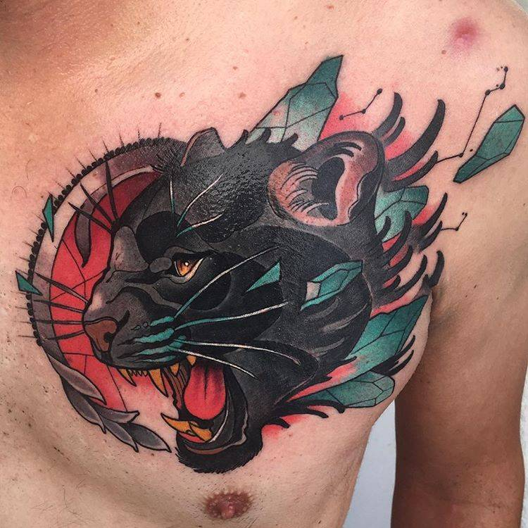
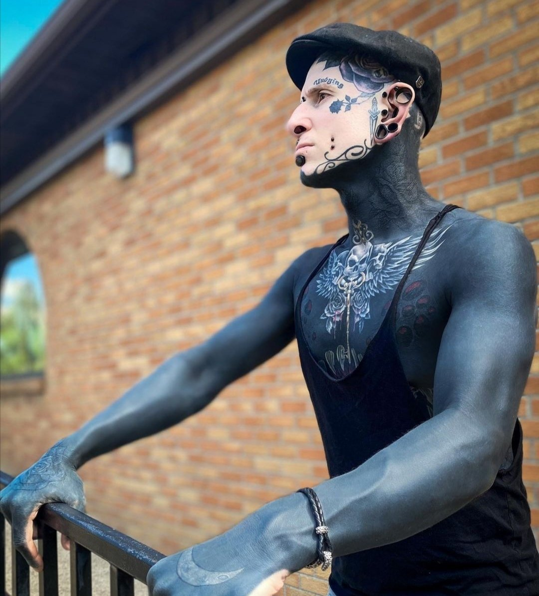

neotradi
El estilo «Neotradi», como también se le conoce, combina a la perfección innovación y tradición ya que toma elementos de la escuela Old School y los enriquece con toques del realismo y del estilo New School dando lugar a tatuaje muy llamativos.

old school
Old school es, en el arte del tatuaje, una referencia al estilo tradicional estadounidense, caracterizado por líneas negras gruesas, generalmente con una gama de colores plana y definido por un imaginario

black work
El nombre blackwork viene de los términos ingleses black, negro, y work, trabajo. Esta técnica utiliza únicamente tinta negra en sus diseños, pero hay una sutil diferencia con otros estilos, como el realista. La tinta no se aplica haciendo sombreados o degradados, sino que se delimita en zonas marcadas.

new school
La nueva escuela es un estilo de tatuaje que se originó en la década de 1970 e influido por algunas características de los tatuajes de la vieja escuela en los Estados Unidos. El estilo a menudo se caracteriza por el uso de contornos gruesos, colores vivos y representaciones exageradas del tema.

sigilismo
El sigilismo es un estilo que ha salido muy recientemente, tiene caracteristicas del esilo tribal pero es mas fino y generalmente se puede hacer sin relleno
blackout
Los tatuajes blackout son un tipo de tatuaje que consiste en tatuar una zona del cuerpo completamente negra. Aunque muchas personas se hacen tatuajes oscuros como una pieza independiente, también son un método para encubrir tatuajes no deseados

Acuarela